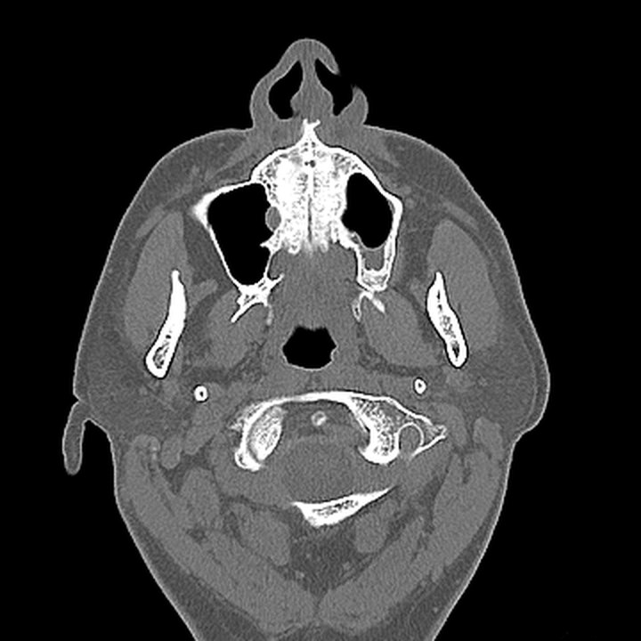
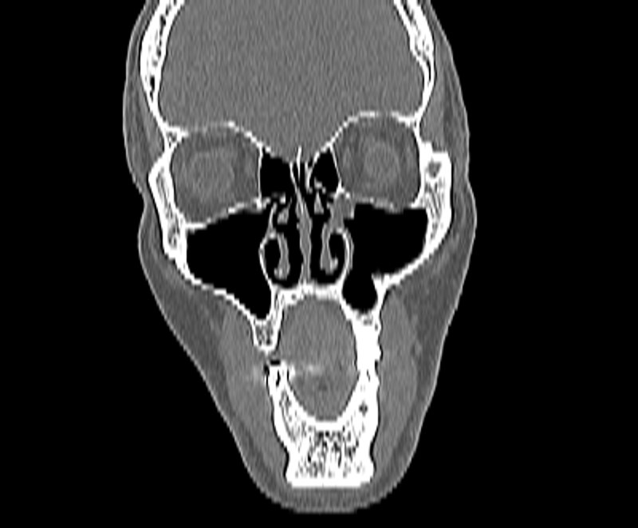

Andrii Mikhalov, medical file
Andrii Mikhalov, medical fileNose and paranasal sinuses
Radiologist's report (main document)
Radiologist's report, CT of the paranasal sinuses and orthopantomogram, 2024 (Odrex). Conclusion: CT signs of chronic maxillary sinusitis of the left maxillary sinus. CT of the paranasal sinuses and orthopantomogram, radiologist's report, 2024, PDF, 136 KB
The problem is only in the left maxillary sinus.
- Left maxillary sinus: uneven mucosal thickening up to 10 mm with a minimal amount of wall-adjacent content; postoperative defect of the medial wall up to 8 mm; deformation of the anterior and posterolateral walls, defect of the anterior wall up to 5 mm; remodeling of the walls; thinning of the lower wall to 3 mm in the area of removed teeth.
- Left anterior ostiomeatal complex: blocked (right: patent). Nasal septum: no curvature noted. The rest is as in the report.
- Recommendations in the report: ENT consultation, dentist consultation.
Septoplasty, 2013
Septoplasty (submucous resection) for nasal septum deviation, J34.2, at a private hospital in Istanbul, Turkey. Admitted 2013 with long-standing nasal obstruction, headache and nasal discharge. Under general anesthesia the deviated part of the septal cartilage and the bony crest at the septal floor were removed through an incision; both nostrils were packed. One night in hospital, packing removed, discharged on medical treatment with 10 days of rest. Discharge summary (epikriz) in Turkish. Discharge summary after septoplasty (epikriz, Turkish), 2013, JPG, 1.1 MB

ENT consultation, 2016
Private clinic in Odesa. Final diagnosis: vasomotor rhinitis. Recommended: X-ray of the paranasal sinuses, complete blood count with blood sugar and clotting, urinalysis, ECG. Handwritten note. ENT consultation note, handwritten, 2016, JPG, 2.0 MB

Tooth root removal and left maxillary sinus revision, 2016
Removal of a tooth root remnant and revision of the left maxillary sinus (no discharge summary). The 2024 CT shows a postoperative defect of the medial wall of the left maxillary sinus up to 8 mm. Documents: dental CT images, a photo of the stitches on the upper palate, and the dental surgeon's handwritten prescription (Dalacin C 300 mg twice a day for 5 days, Suprastin, Nimesil, Givalex rinse, Linex; a handwritten note on nose drops, partly legible). Also: a handwritten list of medicines and solutions (photo of 2016) and a handwritten dental patient card (photo of 2016). Dental CT, jaw cross-sections, left maxillary sinus, 2016, JPG, 372 KB Upper palate with stitches, JPG, 702 KB Dental surgeon's prescription, handwritten, 2016, JPG, 330 KB List of medicines and solutions, handwritten (photo date), 2016, JPG, 78 KB Dental patient card, handwritten (photo date), 2016, JPG, 2.0 MB


ENT recommendation, 2024
In 2024 an ENT specialist diagnosed chronic left maxillary sinusitis and recommended a planned endoscopic left maxillotomy (revision). It has not been done, for reasons not related to medicine. The dentist consultation recommended in the radiologist's report on the 2024 CT has also not taken place, for the same reasons.
Reduction of the inferior nasal turbinates
At Odrex, reduction of the inferior nasal turbinates was discussed. I wanted to have it done with cold plasma. It was mentioned but not recommended. One of the doctors said she was concerned about empty nose syndrome.
Key CT images, 2024
Representative slices of the CT of the paranasal sinuses, 2024 (JPEG, for quick viewing). They do not replace the radiologist's report. The full study is in the DICOM archive below.






All studies and documents
- 2024: CT of the paranasal sinuses (DICOM), radiologist's report of 2024, ENT referral for the CT, ENT consultations. CT of the paranasal sinuses, 2024, ZIP, 395.1 MB, needs a DICOM viewer ENT referral for CT of the sinuses (Odrex), 2024, JPG, 447 KB ENT consultation, 2024, PDF, 647 KB ENT consultation, 2024, PDF, 643 KB
- 2016: CT of the paranasal sinuses, head CT 3D, dental CBCT (two archives), skull scout image, ENT consultations. CT of the paranasal sinuses, 2016, ZIP, 232.3 MB, needs a DICOM viewer CT of the head, 3D, 2016, ZIP, 62.3 MB, needs a DICOM viewer Dental CBCT, part 1, 2016, ZIP, 287.7 MB, needs a DICOM viewer Dental CBCT, part 2, 2016, ZIP, 283.9 MB, needs a DICOM viewer CT of the skull, lateral scout image, 2016, JPG, 36 KB
- 2013: CT of the paranasal sinuses (DICOM), ENT consultation, videos of 2013. CT of the paranasal sinuses, 2013, ZIP, 289.7 MB, needs a DICOM viewer ENT consultation, nasal septum deviation, 2013, JPG, 351 KB Video, 2013, MP4, 6.1 MB Video, 2013, MP4, 2.5 MB
- Panoramic X-ray and orthopantomogram. Dental panoramic X-ray, BMP, 4.1 MB Orthopantomogram from a disc, ZIP, 2.2 MB, needs a DICOM viewer


All files are also on the Documents page. Imaging archives open in any DICOM viewer.
← Back